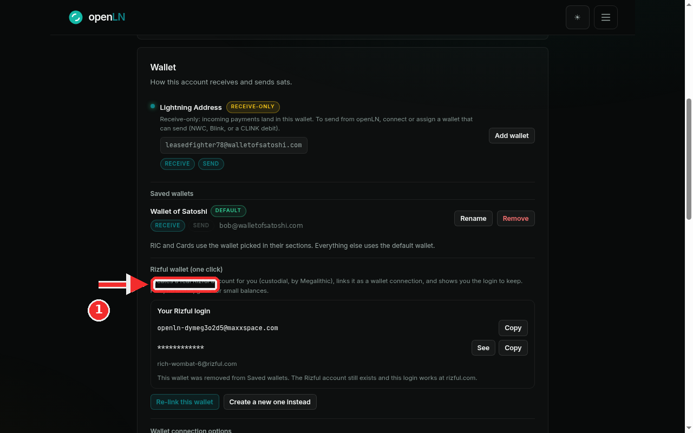
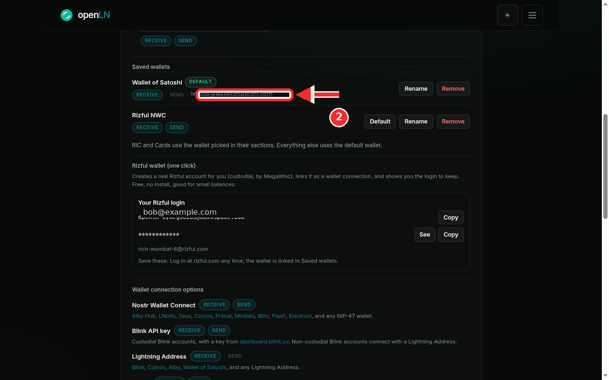

How to re-link a removed Rizful wallet
Removing a Rizful wallet from Saved wallets does not delete anything. This guide shows you how to bring the same wallet back with one button. Re-linking takes a few seconds, creates no new account, and asks you to type nothing. Rizful is the one-click wallet that openLN sets up for you from the Rizful wallet (one click) card, and it is custodial: the account is held for you by Rizful (by Megalithic), and the login on the card is the key to it. openLN links the wallet and never takes custody of your sats.
- You are signed in to your openLN account.
- Your Rizful wallet was created from the Rizful wallet (one click) card and later removed from Saved wallets. Re-link is offered when openLN still holds the saved connection for it.
- Nothing is charged during re-linking and no funds move. There is nothing to pay for and nothing to type.
- Your login keeps working at rizful.com whether or not the wallet is linked here. A removal never strands funds.
Open the Rizful card and press Re-link this wallet
Go to Settings and find the Wallet card. Under Saved wallets the Rizful wallet is gone, and further down, on the Rizful wallet (one click) card, openLN tells you exactly what that means: "This wallet was removed from Saved wallets. The Rizful account still exists and this login works at rizful.com." Read that sentence again, because it is the heart of this guide. Removing the wallet from Saved wallets only removed the link inside openLN. The Rizful account itself, its balance and its login were never touched, and the card still shows the login with Copy and See so you can prove it to yourself (this is the card shown in the screenshot, in its removed state). Now press Re-link this wallet, the teal button at the bottom of the card. openLN uses the saved connection it kept from the day it created the account, so there is no new account, no password to type and no import: the same wallet comes back to the same place. If you would rather start over, the button next to it, Create a new one instead, sets up a brand new Rizful account and links that one. Your old account is not deleted by that either, and its login keeps working at rizful.com.

The wallet is back under Saved wallets
A moment later a toast confirms Wallet re-linked, and the Rizful row is back in Saved wallets (marked in the screenshot) with its RECEIVE and SEND chips and the same Default, Rename and Remove buttons as any other saved wallet. Everything works as before: the wallet is ready to receive, the RIC and Cards sections can pick it again, and sending works wherever sending is used. The login box stays right below the list, with Copy and See ready the moment you need it for rizful.com.

- If re-linking fails. Two failures can happen: "This wallet cannot be re-linked" when the saved connection cannot be matched to the wallet, and "Could not read this wallet right now" when the connection exists but cannot be opened. In both cases press Create a new one instead. A wallet that was never fully created has nothing to re-link, and the card is honest about it.
- The login is the account. Rizful is custodial, held by Rizful (by Megalithic). The login shown on this card is the key to the balance, so put it somewhere safe with Copy or See. openLN never takes custody of your sats.
- Removal is safe by design. You can remove the wallet from Saved wallets again whenever you like. The account and the login stay yours, and this same card lets you re-link again.
- Nothing is charged. Re-linking is free and moves no funds. It only restores the connection inside openLN.